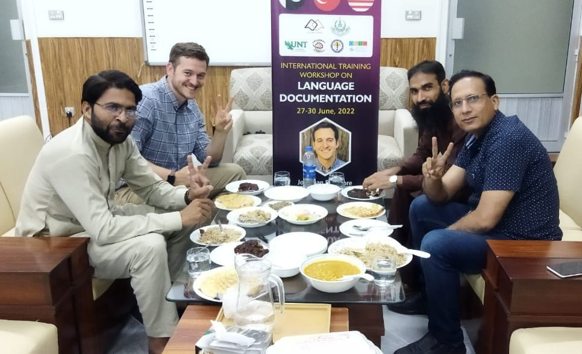
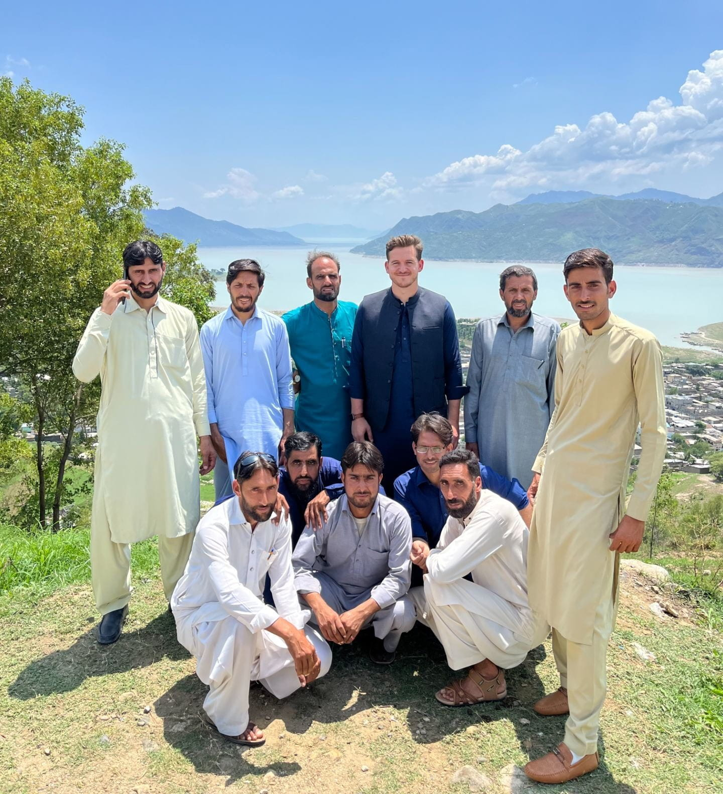
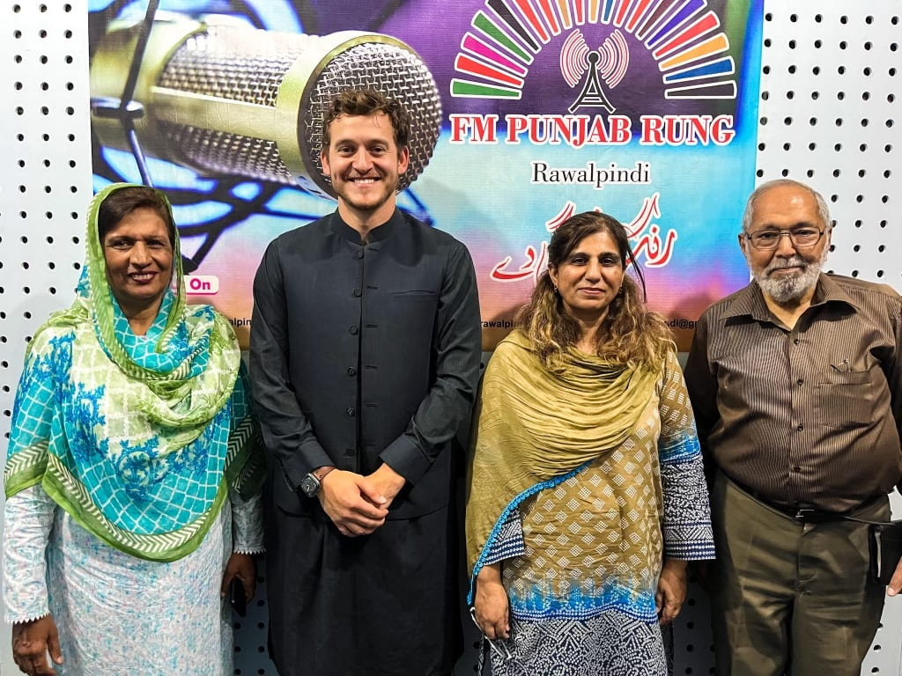
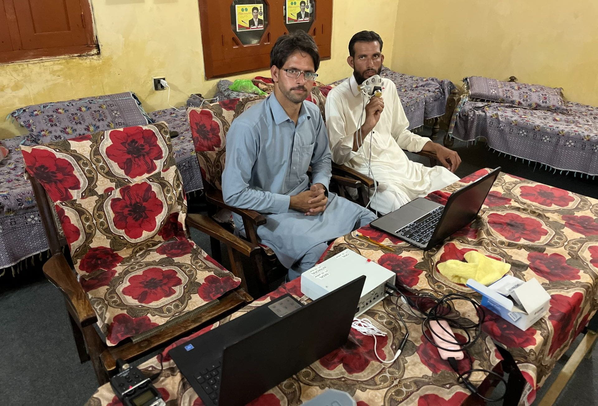

Pakistan
Pakistan is home to over 70 indigenous languages, and many of them are critically understudied and endangered. Of primary importance in my fieldwork in Pakistan is the documentation and revitalization of these indigenous languages so that the cultural heritages of these linguistic communities can thrive and the rich linguistic diversity of Pakistan can be preserved. A primary means through which I approach this work is by seeking to equip members of these linguistic communities with the skills needed to advocate for their language and develop linguistic materials that can be used to encourage language use and uplift the prestige of these marginalized languages (e.g., grammatical descriptions, language-teaching materials, poetry, etc.).
In addition, given the rugged mountainous terrain in the northern part of Pakistan, many of these indigenous languages have evolved in relative linguistic isolation over the centuries. As such, they exhibit many unique linguistic properties that are particular to the region but provide insights into the nature of language and challenge current linguistic theory in different ways. In conducting research on these understudied languages, one of my primary aspirations is to contribute to our understanding of language by collecting novel fieldwork data that provides a more wholistic picture of the potential range of language structure and variation.
Below, I've provided summaries of several current research projects on the languages of Pakistan as well as a few of the avenues through which I am hoping to participate in indigenous language promotion and preservation. If you are interested in collaborating on any research or preservation projects, please reach out! I am always excited about the prospect of working with others who have a like-minded passion for the communities of Pakistan.
Documentation & Preservation
2022 International Training Workshop on Language Documentation
In the summer of 2022, I had the opportunity to co-lead a 5-day training workshop held by the Center for Language and Translation Studies in the capital of Pakistan at Allama Iqbal Open University. The training focused on teaching fundamental language documentation skills that participants could use to begin documenting their languages.
About 40 participants consisting of professors, graduate students, and others from around Pakistan attended. The sessions I taught focused on the basics of using recording equipment, ethics in documentation, archiving data, what to record, and how to collect data to demonstrate phonemic contrasts. Many participants were native speakers of endangered Pakistani languages, so the training went a long way in equipping speakers to take the lead in preserving their languages.
Grammatical Description of Mankiyali
Grammatical descriptions are essential both for preserving languages and advancing linguistic theory. For understudied and endangered languages, a detailed phonological analysis provides a record of a language’s linguistic features, such as its phonemic inventory, phonotactic constraints, and prosodic phenomena. For my master's thesis, I developed a grammatical sketch of Mankiyali. In the grammar, Mankiyali’s consonant and vowel inventories are outlined, including distinctions in length, tenseness, and nasality, as well as the phonotactic rules governing allowable consonant clusters and syllable structures. Descriptions of phonological processes, like vowel elision and nasal assimilation are provided, as well as a detailed description of the language's weight-sensitive stress system.
Poetic Anthologies
In conjunction with my research on syllable weight effects in poetic meter, I have begun to develop poetic anthologies cataloging significant historical events and religious traditions of several indigenous linguistic communities in Pakistan. I have already recorded a handful of poems by Mankiyali poets, and I plan to extend this project to neighboring Hindko and Pakistani Pashto communities as well. Poetry is a central component of Pakistani culture; people often perform spontaneous recitations of new poems they have just written over meals and tea, and poems serve as the oral medium by which many historical events are passed on from generation to generation. Thus, consolidating poetic works that have been preserved orally into physical form will serve to promote mother-tongue literacy and cultural pride.
Current Research
Acoustic Correlates of Stress in Mankiyali
In collaboration with a native speaker of Mankiyali, Aurangzeb, we have been exploring the phonetic correlates of Mankiyali’s stress system. Specifically, we analyze the phonetics of stress, providing acoustic evidence for a five-tier stress scale in Mankiyali: CVːC > CVː > CVCC > CVC > CV. This system is extremely rare and seems otherwise unattested in the world’s languages, so its pattern extends our understanding of the linguistic typology of weight-sensitive stress. In future work, we hope to examine other potential weight-sensitive properties of the language, like tone, word-minimality, and poetic meter.
Nasalization in Mankiyali & Punjabi
In the summer of 2023 I traveled to Punjab, the Islamabad capital territory, and Khyber Pakhtunkhwa to run experiments collecting air pressure measurements of contrastive oral and contrastive nasal vowels in Mankiyali and Punjabi. In the Punjabi experiment, I provide oro-nasal air pressure data to show that vowels occurring before a nasal consonant /VN/ are phonetically identical in nasality to contrastive nasal vowels /Ṽ/. I argue that /VN/ vowels are underlyingly oral, but undergo a predictable process of nasalization. Nevertheless, only /Ṽ/ vowels trigger regressive nasal harmony, which spreads nasality leftward through glides and vowels. Harmony is thus sensitive to whether a vowel is oral or nasal in its basic, underlying form – even for vowels that are always phonetically nasal. This implies that some vowels have abstract representations, distinct from their phonetic forms.
In the Mankiyali experiment, I show that, though oral and nasal vowels are contrastive in the language (e.g., [ɖɪɪ] ‘giant’ vs. [ɖɪ̃ɪ̃] ‘firewood’), this contrast is neutralized before nasal consonant suffixes: [ɖɪ̃ɪ̃ɳ] ‘of the giant, of the firewood’. Moreover, neutralization is phonetically complete, in that no phonetic differences in nasal air pressure arise between the two underlyingly distinct vowels. This kind of phonetically complete neutralization is surprising within exemplar-based models that argue that the production of various allomorphs of a morpheme should be influenced by the productions of related allomorphs. Specifically, exemplar-based theories incorrectly predict that [ɖɪ̃ɪ̃ɳ] ‘of the giant’ should be less nasalized (because of its morphological relationship with oral [ɖɪɪ] ‘giant’) than [ɖɪ̃ɪ̃ɳ] ‘of the firewood’ (because of its morphological relationship with nasal [ɖɪ̃ɪ̃] ‘firewood’). However, within generative frameworks, in which abstract, symbolic phonological processes can completely merge two distinct sounds, it is unsurprising that two underlyingly distinct words would surface with phonetically identical realizations.
